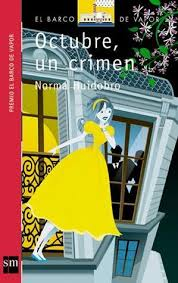

"Octubre, un crimen" es una novela del autor chileno Carlos Huidobro, publicada en 1998. Esta obra se sumerge en la oscuridad y complejidad del crimen y la moralidad a través de una narrativa intrigante y psicológicamente intensa.
La trama de "Octubre, un crimen" gira en torno a una serie de eventos criminales que se desarrollan en una pequeña localidad chilena. La historia se centra en la investigación de un asesinato ocurrido en octubre, revelando gradualmente la trama detrás del crimen y el impacto que tiene en los personajes involucrados. La novela explora las motivaciones y las vidas de los protagonistas, ofreciendo una mirada profunda a la naturaleza del mal y la justicia.
conclusión
"Octubre, un crimen" es una novela que combina el suspense con una reflexión profunda sobre el crimen y la moralidad. Carlos Huidobro presenta una trama bien construida, personajes complejos y un estilo narrativo envolvente que mantiene al lector cautivado. La obra es una lectura recomendada para quienes disfrutan de novelas de misterio y criminales que también invitan a una reflexión sobre la naturaleza de la justicia y el comportamiento humano.